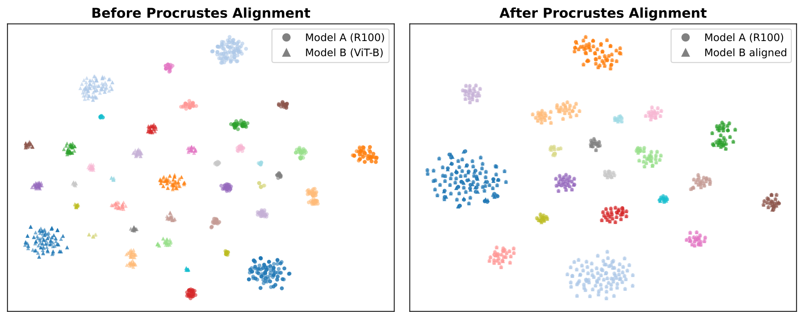
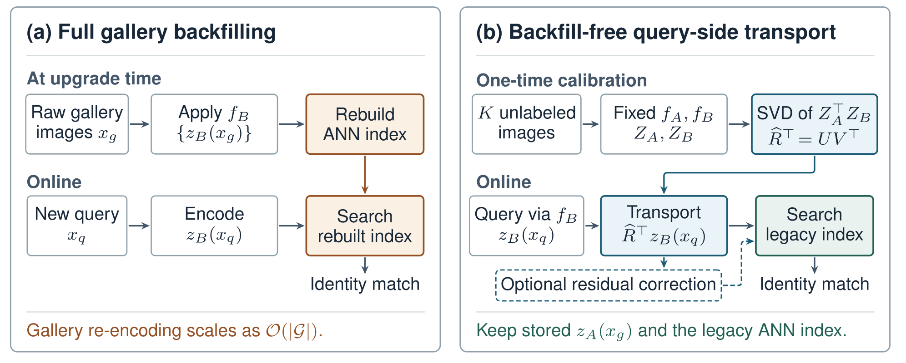

Two encoders can each recognize faces while producing incompatible vectors for the very same image. We studied this mismatch across 45 models. For the within-family upgrades we tested, unlabeled calibration images let the new encoder search an existing gallery in its original coordinates.
How much geometry do two encoders share?
ArcFace and CosFace classify faces by the angles between features and class prototypes. Rotating or reflecting every feature and prototype together leaves the objective unchanged. Two training runs can therefore choose different coordinates. The empirical question is how much of their geometry agrees once those coordinates line up.
We fitted one orthogonal map to same-image feature pairs and measured the mismatch that remained. On WebFace12M, changing only the seed gave mean aligned cosine similarities of 0.898–0.935. For R100 and ViT-B, both trained with CosFace, that value fell to 0.614.

Fit once and map incoming queries to legacy coordinates
Both fixed encoders process the same calibration images. Stack the legacy vectors as rows of X and the upgraded vectors as rows of Y. If the singular value decomposition of XᵀY is UΣVᵀ, then Q = UVᵀ maps an upgraded column vector into legacy coordinates. The pairing comes from the images themselves, so fitting requires no identity labels.
At retrieval time, the new encoder emits z. One matrix multiplication gives Qz, which searches the original index. If the mapped query lies within Euclidean distance ε of the legacy query, its similarity to any unit gallery vector can change by at most ε. A correct legacy top match with a lead greater than 2ε over the best negative therefore remains correct.

What happens to the top match in a 1.6M-image gallery?
Our derived IFRT-MR identification split uses 5,000 separate calibration images, 10,000 queries and a gallery of 1,614,305 legacy images. Rank-1 is the fraction of queries whose top result has the correct identity. We measure retention relative to Rank-1 when the legacy encoder processes both the query and the gallery.
For the tested seed, loss and ResNet depth changes, orthogonal alignment retained at least 99.8% of legacy Rank-1. For example, changing the R100 training seed took direct matching down to 0.00% Rank-1. Alignment recovered 99.23%, against a legacy reference of 99.27%.
| Upgrade | Legacy | Direct | Aligned | Aligned + residual |
|---|---|---|---|---|
| R100 (Cos), s1 → s2 | 99.27 | 0.00 | 99.23 | 99.20 |
| R100, Cos → Arc | 99.27 | 86.43 | 99.18 | 99.15 |
| R50 → R100 (Cos) | 98.95 | 0.00 | 99.10 | 99.05 |
| R100 → ViT-B (Cos) | 99.27 | 0.00 | 96.29 | 98.01 |
Which upgrades need a correction beyond alignment?
The R100-to-ViT-B upgrade retains a substantial alignment error even as calibration data increases. An orthogonal map can correct coordinates while preserving every angle inside the upgraded model. We fitted a two-layer residual network after alignment to capture the remaining deformation. On this upgrade it raised Rank-1 from 96.29% to 98.01%, against the 99.27% legacy reference.
Image quality also matters. On the TinyFace data-scale upgrade, alignment calibrated with 3,000 external LFW images reached 23.95% Rank-1, compared with 26.23% for the legacy system. The model pair, target image quality, gallery size and retrieval protocol all affect how much compatibility survives.
Citation
BibTeX
@inproceedings{zhao2026representationrigidity,
title = {Representation Rigidity in Face Embeddings: Orthogonal Identifiability and Backfill-Free Compatibility},
author = {Zhao, Yongle and Chen, Zhichao and Xie, Yin and Wang, Jun and Feng, Ziyong},
booktitle = {Advances in Neural Information Processing Systems},
year = {2026},
url = {https://openreview.net/forum?id=alci29b9Vd}
}